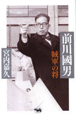

|
|
|
|
2005'12 ここでご紹介した本はいずれも最寄りの書店、または当ホームページ「ご購入について」の中のオンライン書店等経由でお求めいただけます。 |
快挙!!『このミステリーがすごい！2006年版』海外ミステリー部門、ジャック・リッチー著『クライム・マシン』が第一位!!に選ばれました。 いまや年末の風物詩となり、ミステリー好き、読書好きには欠かせない『このミステリーがすごい！』。今年で18年目を迎えたミステリーガイドの決定版です。“読書の達人たち”のアンケートによって選ばれたランキング作品は、その年、珠玉のおススメ作品がズラリ。せっかくの読書タイムを有意義に使いたい人にピッタリのミステリーガイドの決定版。小社は2002年から晶文社ミステリを出版し続け、『このミステリーがすごい！』第一位に輝いたのは今回が初めてです。 クライム・マシン |
「生誕100年・前川國男建築展」東京ステーションギャラリーにて開催！ 2005年12月23日(金)～2006年3月5日(日) 前川國男 賊軍の将 宮内嘉久著 |
『リトルバーズ 戦火のバグダッドから』の綿井健陽氏2005年《JCJ大賞》受賞！ 日本ジャーナリスト会議（JCJ）は、1958年以来、年間のすぐれたジャーナリズム活動･作品に賞を贈り、顕彰してきました。今年は48回目にあたります。 選考委員は次の方々伊藤洋子（東海大学教授）、大谷昭宏（ジャーナリスト）、清田義昭（出版ニュース社代表）、 柴田鐵治（国際基督教大学教授）、中村梧郎（フォトジャーナリスト） ●公式ホームページ http://www.littlebirds.net |
ロカルノ国際映画祭で映画『Little Birds イラク戦火の家族たち』が人権賞を受賞(最優秀賞) ！ 『Little Birds イラク戦火の家族たち』がロカルノ国際映画祭の人権部門(Human RIghts)にて上映され、8月13日に人権部門の中で最優秀賞にあたる人権賞(Human Rights Award)を受賞されました。 |
好評連載中の小野博さん、写真集刊行！ 13人の写真家が、EU全25カ国を撮りおろした写真集シリーズ「In-between」全14巻が、有限会社オシリスより販売されました。当ホームページで好評連載の小野博さんの写真集も好評です。 主催・発行：EU・ジャパンフェスト日本委員会 販売に関する問い合わせ：有限会社オシリス 関連イベント情報！「In-between」全14巻完結記念イベント 2005年11月19日（土）15:00～17:00（14:30開場） |
||
『「心」と戦争』『平和と平等をあきらめない』が好評の高橋哲哉さんの講演会ご案内です。 UTCP（東京大学 共生のための国際哲学交流センター） 2006年1月6日（金） 13：40－17：00 I 近代化・ジェンダー・暴力 2006年1月7日（土） 14：00－17：20 III ポスト1945年史における法・暴力・トラウマ 2006年1月8日（日） 14：50－17：00 総括討論 UTCP（東京大学 共生のための国際哲学交流センター）事務局 |
朝日カルチャーセンター公開講座に注目！ |
明川哲也さん出演の『爆笑問題のススメ』がDVDに! 毎回多彩な作家ゲストを迎えるテレビのトークバラエティーがDVDになりました。「作家の目線V.S爆笑問題の目線」で熱く切り込んでいきます。核心は突いてはいても涙を飲んでカットせざるを得なかった未放送シーンを、ふんだんに収録。番組を見ていない人はもちろん、見た人にも新たなサプライズが待っています! 弊社刊『メキシコ人はなぜハゲないし、死なないのか』も好評の明川哲也さん(TETSUYA）も登場します。 「爆笑問題のススメVol.2 実はこんなトーク、カットしてました 日本を代表する裏・文化人 編」 収録作家（順不同）: 発売:2004年12月22日 |
|
本に掲載された村木与四郎さん、忍さんのスケッチの一部を、複製して販売します。
村木与四郎さんのサイン入りで、A3サイズの複製画を額装したものを４点、各100枚の限定販売。さらに、ポストカードを12枚1組で好評販売中。
|
アフガニスタンから世界を見る 春日孝之 2415円 |
| 前川國男／2刷一八九〇円 自分の仕事をつくる 西村佳哲／16刷一九九五円 |